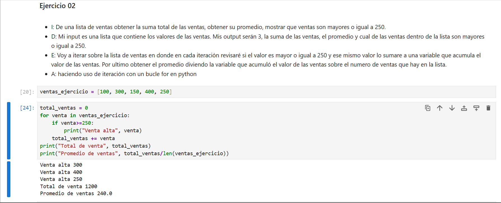

Jupyter Notebook, python
Conociendo Jupyter Notebook y principios de Python
Se nos presentó una explicación de como es que opera Jupyter Notebook, de la misma mera vimos principios fundamentales de python.
Ver Jupyter NoteBook↗